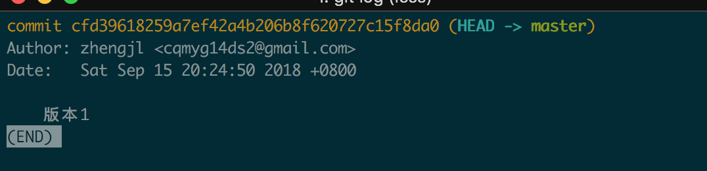
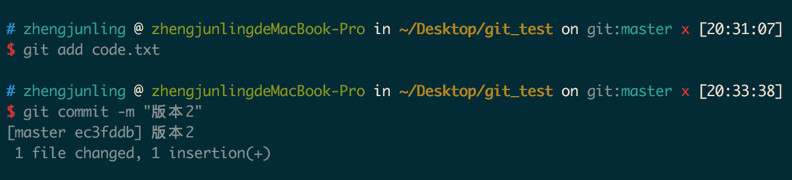
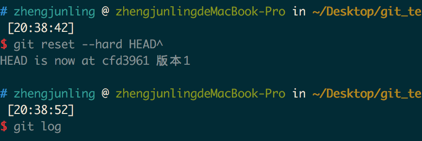

1. git的两大特点
- 版本控制：可以解决多人同时开发的代码问题，也可以解决找回历史代码的问题。
- 分布式：Git是分布式版本控制系统，同一个Git仓库，可以分布到不同的机器上。首先找一台电脑充当服务器的角色，每天24小时开机，其他每个人都从这个“服务器”仓库克隆一份到自己的电脑上，并且各自把各自的提交推送到服务器仓库里，也从服务器仓库中拉取别人的提交。可以自己搭建这台服务器，也可以使用GitHub网站。
2. 安装与配置
sudo apt-get install git
3. 创建一个版本库
新建一个空目录git_test ，在git_test目录下创建一个版本库
git init
git_test目录下会生成一个.git隐藏目录，这就是版本库目录
4. 版本创建与回退
创建一个code.txt 文件

4.1. 创建版本
git add code.txt
git commit -m "版本1"

4.2. 添加身份标识（git不做检查）
git config --global user.email "you@example.com"
git config --global user.name "Your Name"
4.3. 查看版本记录
git log

继续编辑code.txt，在里面增加一行。

使用如下命令再创建一个版本并查看版本记录：

git log

4.4. 回到上一个版本
git reset --hard HEAD^
- 其中HEAD表示当前最新版本
- HEAD^表示当前版本的前一个版本
- HEAD^^表示当前版本的前前个版本
- HEAD~1表示当前版本的前一个版本
- HEAD~100表示当前版本的前100版本。
如果想要回到版本1：
 但是此时git log 只能查看版本1的记录
4.5. 查看我们的操作记录
git reflog

可以看到版本2的版本号，我们再使用如下命令进行版本回退，版本重新回到了版本2。